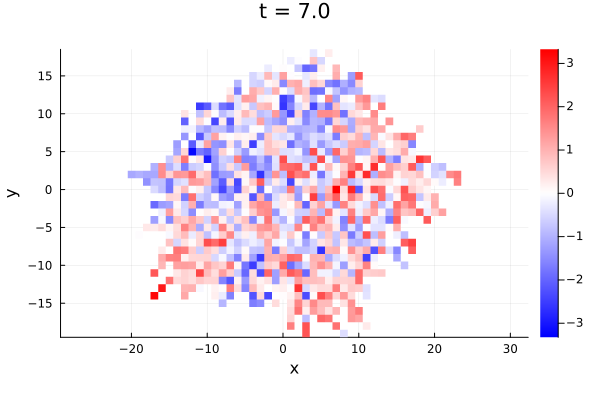
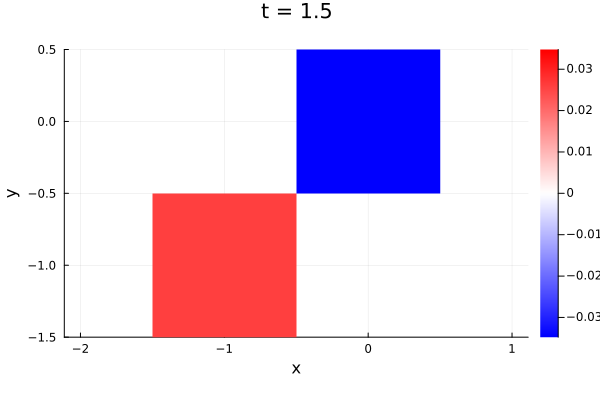
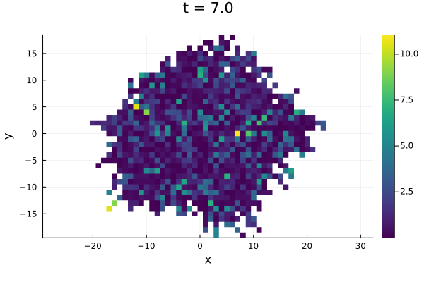
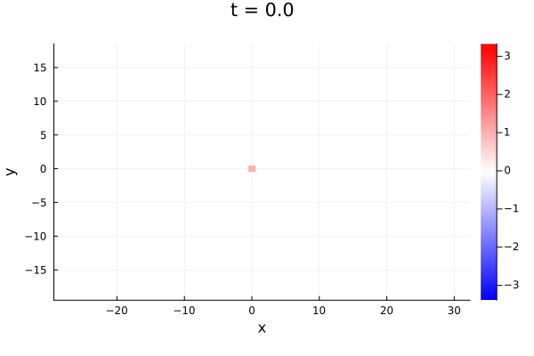

Spatial heatmaps
The branchingheatmap function visualises the internal state of all particles alive at a given time, positioned at their spatial grid coordinates as assigned by tissue_growth!. An animation sweeping over the full time span can be produced with animate_heatmaps.
Setting up the problem
Define a simple scalar SDE (constant drift zero, diffusion coefficient 0.5) and wrap it in a ConstantRateBranchingProblem with a 2-D spatial layout:
using BranchingProcesses, DifferentialEquations, Plots
f(u, p, t) = 0.0
g(u, p, t) = 0.5
prob = SDEProblem(f, g, 1.0, (0.0, 7.0))
bp = ConstantRateBranchingProblem(prob, 1.0, 2; ndim=2)
sol = solve(bp, EM(); dt=0.01);Plotting a heatmap
branchingheatmap plots the state of every alive particle at the requested time, colour-coded by the value of a scalar function of its state. By default the state itself is used as the scalar (suitable for the scalar SDE above) and the plot time defaults to the final time of the simulation:
branchingheatmap(sol)
Pass time to inspect the tissue at an earlier point in time:
branchingheatmap(sol; time=1.5)
A custom scalar function can be applied to each particle's interpolated state vector via the func keyword argument:
branchingheatmap(sol; func=u -> u^2)
Animating over time
animate_heatmaps produces a Plots.Animation by recording heatmap frames at nframes regularly spaced time points across the full time span.
animate_heatmaps requires Plots.jl to be loaded (using Plots). It is implemented as a package extension.
anim = animate_heatmaps(sol; nframes=30)
gif(anim, "growth.gif"; fps=10)
See also
tissue_growth!— spatial layout algorithmConstantRateBranchingProblem— problem definition (including thendimkeyword)BranchingProcessSolution— solution type returned bysolve